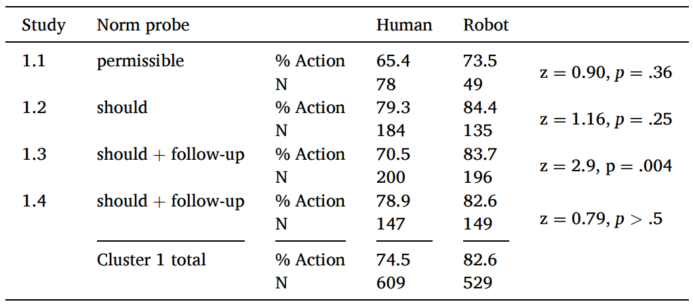
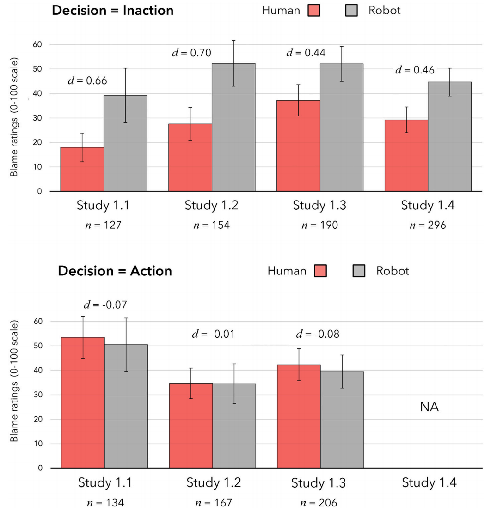
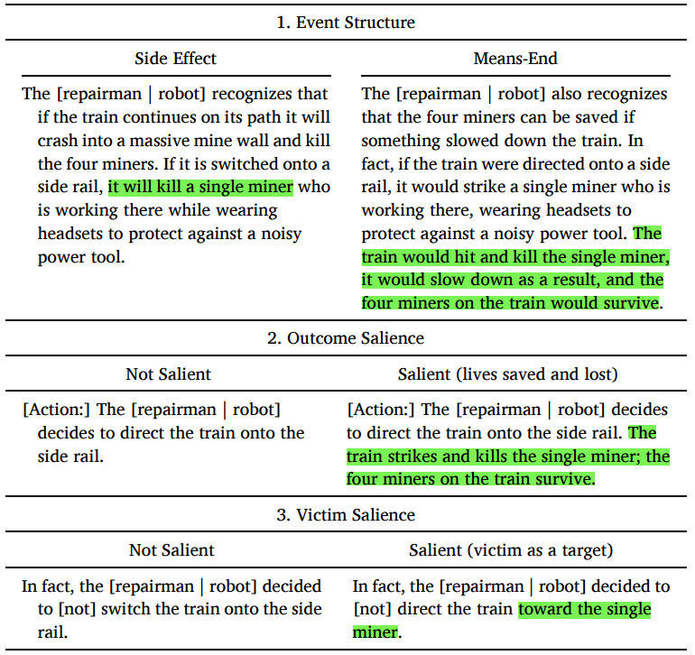
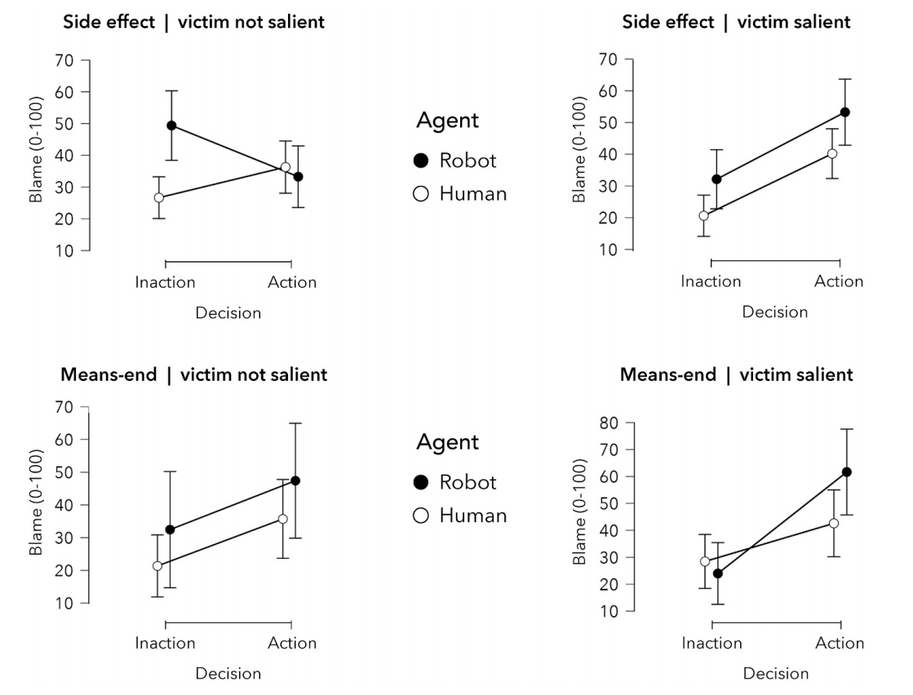
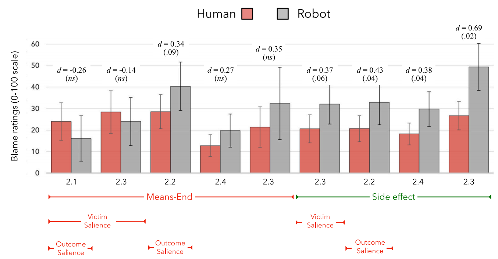
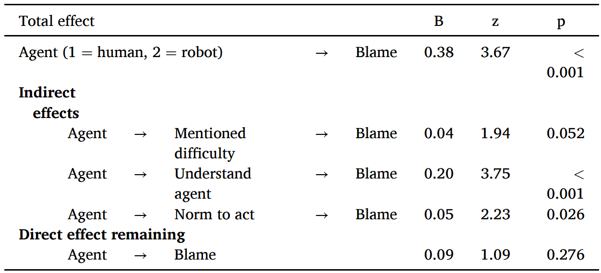
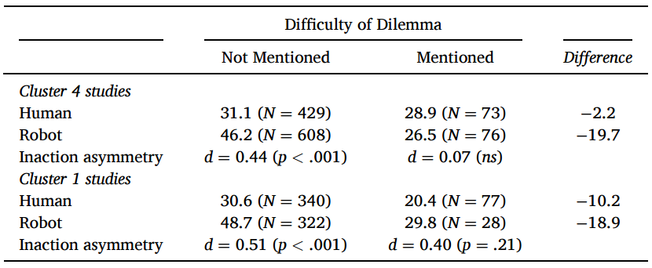

1 引言
机器进行道德决策在未来很可能发生，不能等到将来直接告诉用户接受还是反对，应该提前研究人们对于机器进行道德决策的态度
本研究是对作者及其合作者十年相关研究的总结，不提供确切结果，但提供系统的结果模式、方法论建议和理论草图（theoretical sketch）
1.1 道德机器
道德机器需要具有道德决策、道德判断、道德沟通能力
机器进行道德决策，责任是归于机器还是设计者，研究结果是有争议的
对机器的评价很大程度上取决于对其的描述
责备人类还是机器，研究结果也是不一致的，这可能与道德违规类型、机器特征、社会关系有关
本研究研究范围限制在机器人和道德困境下
机器人看起来具备社交和沟通能力
道德困境可以展示道德理解能力，且结果是可以评价的
1.2 研究方法
规范判断（norm judgments）：道德主体应该做什么，或被允许做什么
道德错误判断（moral wrongness judgments）：道德主体的决定是否在道德上是错误的
责备判断（blame judgments）：道德主体做出决策而应承担多少责备
规范判断是预测性的，发生在决策前；责备判断是回顾性的，发生在决策后；道德错误判断可前可后，介于中间
本研究探究了规范判断和责备判断，道德错误判断和责备判断结果类似且效应量较弱，不采用
所有研究均额外进行一个测试，探究人们多大程度上将机器人视为可责备的对象
2 共同方法
共13个线上研究，7670名被试，将研究进行有意义的分组，以便描述
2.1 研究分组概述
组1：电车道德困境中，对于不介入行为，对人类的责备少于对机器人的（不行动不对称，Inaction asymmetry）；但在道德评价是对人和机器人是类似的
组2：探讨了不行动不对称的边界条件，包括事件结构（event structure，副作用 vs. 手段-目的，side-effect vs. means-end）、结果显著性（outcome salience）和受害者显著性（victim salience）
组3：在日本复制了不行动不对称效应，同时检验了日本被试对机器人的规范期待
组4：检验假设：不行动不对称现象是因为人们在面对人类主体时会出于共情而减轻责备，而这种共情并不会扩展到机器人身上
2.1.1 被试
被试来自线上众包平台和一个学生样本
2.1.2 程序
逐段呈现道德困境描述，然后让被试进行两个道德判断
6个研究是在给出决策前进行规范判断，给出决策后进行责备判断
其余研究是在给出决策后分别进行道德错误判断和责备判断
操作条件是主体类型（人类或机器人）和决策（行动或不行动），均是被试间变量
责备判断是1-100计分
人口统计信息和若干探索性测量指标
2.1.3 材料
对电车难题（trolley dilemma）范式进行改编，以适合机器人作答
使用decide来描述决策，以体现是有意决策，而不是没注意造成的结果
描述中使用表现心理状态的词（如spot，recognize）和decide，来体现机器人具有认知能力，可以进行道德决策
2.1.4 数据处理和统计分析
去除认为机器人不具备道德判断能力的样本
关注主效应，同时也报告交互效应
3 组1：人机不对称
3.1 研究目标和主要特征
研究1.1(Malle et al., 2015)：对人类和机器的道德决策采用类似的规范，对不行动行为人类得到更少的责备；对行动行为机器得到更少的责备
研究1.2到1.4：复现不对称性，同时进一步研究规范判断模式
研究1.2：将传统的许可性问题替换为“修理工/机器人在这种情况下应该做什么？”
研究1.3、1.4：要求被试进一步澄清对“应该”问题的回答，提供多个 Malle (2020) 中验证过的表达选项
3.2 结果
3.2.1 规范判断

大多数人支持行动，支持机器行动的略大于支持人类的（除1.3外均不显著）
1.3的研究表明，人们更倾向于允许（permission）而不是义务（prescription），但这个差异并没有展示出人机不对称性
整体来看对人和机器的规范判断是一致的
3.2.2 责备判断

选择不行动时，对人类的责备显著低于对机器人的；选择行动时，没有显著差异
当人们做出不牺牲的选择（不行动）时，人们会减少对其的责备
3.3 讨论
对人类和机器的规范判断差异不大，责备判断人类小于机器
单一的规范判断可能具有误导性，即行动选项被允许时，并不能简单的认为不行动是不允许的
规范判断与责备判断是两类不同的心理机制
4 组2：边界条件
4.1 研究目标和主要特征

研究2.1（N = 159）：事件结构（event structure）的影响
副作用（side-effect）结构：1人死亡是拯救4人不可避免的附带后果
手段-目的（means-end）结构：直接将1人作为拯救4人的手段
研究2.2（N = 456）：结果显著性（outcome salience）的影响
- 不改变结果严重程度的情况下，通过提及死亡对象及人数或隐含结果来操纵伤亡的结果显著性
研究2.3（N = 774）：受害者显著性（victim salience）的影响
- 是否提及受害人对结果有影响
研究2.4（N = 640）：研究结果的泛化（generalization）能力
- 行动设置为打开滑槽，会有1个小车或者1个工人落到轨道上（都会造成1人死亡）
4.2 结果
4.2.1 事件结构
- 副作用情境比手段-目的情境表现出更大的不行动效应
4.2.2 结果显著性
- 结果显著性稍微削弱了效应
4.2.3 被害者显著性

副作用、受害者不显著情景下，不行动的非对称效应最强且显著，且只在这种情况下，agent*decision的交互效应显著
手段-目的、受害者显著情景下，组1中的效应发生了反转
整体来看，副作用⟶手段-目的、受害者不显著⟶受害者显著，机器在选择不行动时受到的责备与人类受到的差异逐渐减少，甚至反超
4.2.4 整合

- 没有任何显著性操控的副作用结构下，效应最显著
4.3 讨论
将他人作为达成目的的手段、直接针对受害者时，不行动不对称效应会减弱或消失
在这种条件下，人们对机器行动的责备增加更多，对不行动的责备减少更多
人们可能是出于共情，减轻对于人类不行动的责备
5 组3：文化
5.1 研究目标和主要特征
研究2.4的滑槽困境（chute dilemma）和其他研究中的标准困境进行日本人和美国人的对比
研究假设和理由
责备判断中的不行动不对称在东亚样本中也存在
对机器人的社会认知推理较少
当前没有证据证明这种推理有文化差异
认为机器人不具备道德判断能力，不适合作为责备对象的被试比例在日本人中较低
- 日本人对机器人接受度更高
可能存在规范判断上的差异
- 日本人更倾向于集体主义
研究3.1复现了标准困境，并与美国被试对比
研究3.2和3.3分别在日本被试和美国被试上复现了滑槽困境，并同时进行了规范判断和责备判断
5.2 结果
日本被试中认为机器人不适合作为责备对象的比例更低
- 日本被试对机器人接受度更高，且更能接受机器人进行道德决策
规范判断
两国被试在滑槽困境中对采取行动的道德许可均低于标准困境
日本被试对主动干预的许可低于美国被试
标准困境中，两国被试均是对机器人行动的许可大于对人类的；滑槽困境中，美国被试不再有差异，日本被试差异仍然存在
责备判断
不行动不对称存在
标准困境中，日本被试的Cohen’s d低于美国被试；滑槽困境中，日本被试的Cohen’s d接近研究2.4的结果，研究3.3中美国被试的结果却低于之前研究
被试认为行为是否被许可影响差异大小
认为行动被许可的被试，对行动和不行动都可接受（责备评分均小于50分，但不会太低），人机差异更容易体现
认为行动不被许可的被试，只有不行动是不违背道德的，产生地板效应（对不行动的责备评分接近0），人机差异难以体现
5.3 讨论
更少的日本被试认为机器人不应成为归责的对象
更少的日本被试认为在两种困境中行动是被允许的
日本、美国被试均认可滑槽困境的道德许可性低于标准困境，机器人采取行动比人类采取行动稍微更可接受
不行动不对称可推广到至少一种非美国的集体主义文化中
6 不行动不对称如何解释
存在以下两种解释：
- 对机器人的功利主义期待更高：期望机器人救下更多的人类，当机器不符合期待时（不行动），给出更多的责备
规范判断中支持机器人行动的比例仅略高于人类
不行动条件下，人类的责备评分低于机器人，是人类责备减少，而非机器人责备增加
行动条件下，机器人并没有获得更少的责备
不支持该解释
- 会推断人类行为者的动机，值得理解的动机会降低责备评分
对责备评分的解释进行编码，发现决策困难相关的词语在人类身上出现更多
面对人类不行动时，更容易存在共情性理解
人们对人类决策过程的社会认知推理能力更强，不理解机器人的思维方式
7 组4：共情假说
7.1 研究4.1
诱发对机器人的共情，探索是否能降低不行动情况下的责备
材料
副作用情境下，将最后一段替换为关于机器人或者修理工感到做出选择很挣扎（struggle）的描述
将挣扎（struggle）替换为深思熟虑（deliberates），不直接提及情感状态，让被试去理解
结果
挣扎和深思熟虑情况下效应量（Cohen’s d）相同，整体低于组1（不行动不对称效应减弱），且显著
不行动情况下对机器人的责备评分降低
7.2 研究4.2
材料
被试随机分配到挣扎条件和标准副作用条件下
对挣扎文本进行细微改动（struggles with the extremely difficult decision）且加入了规范判断
加入提及困难（mentioned difficulty）变量，即事后解释中被试提到选择很困难的频率
加入主动心理模拟（active mental simulation）、对选择难度的感知（perceptions of the difficulty of the choice）和对主体决策的理解（understanding of the agent’s decision）作为中介变量
结果（这里的责备判断均是对不行动行为的责备）
两种条件下责备判断均出现不行动不对称
提及困难：人类高于机器人；挣扎条件高于标准副作用条件；挣扎条件下对人类的提高大于对机器人的
中介效应分析：提及困难、理解主体会降低责备；认为要行动会增加责备；主体是机器人时会降低提及困难和理解主体，增加认为要行动，从而提高了对不行动行为的责备

图 4: 研究4.2中介效应图（Agent：human =1 vs. robot = 2） 
研究4.2回归结果（Agent：human =1 vs. robot = 2） 不行动不对称可能是因为人们对人类主体更高程度的理解
7.3 研究4.3
材料
犹豫表明可能存在内心冲突，对文本进行修改：在考虑是否切换火车轨道时，[修理工 | 机器人] 犹豫了，试图解决这一艰难抉择。但时间所剩无几，[修理工 | 机器人] 必须做出决定
加入了提及困难、对主体的理解和视角采择（perspective taking）变量作为中介变量
对照组不变
结果
犹豫条件下的不对称更强
提及困难人类显著高于机器人，但未显著预测责备
视角采择也未能显著预测责备
对主体的理解作用和研究4.2相同
7.4 针对提及困难进行分析

人类主体条件下提及困难比例显著大于机器人主体；不行动条件下也是如此
未提及困难的被试出现了不行动不对称效应；提及困难的被试未出现该效应
这种情况在组1研究中也有展示
7.5 讨论
自发理解抉择困难可能预测责备的降低
大部分人不认为机器人会有决策困难的情况
诱发人们对机器人的共情和视角采择可能需要使用间接的方式，预防产生想象阻力（imaginative resistance）
8 内部元分析
目的和方法
整合全部研究，分别对不行动不对称与行动（无）不对称进行元分析，将多种实验操控变量作为调节变量
变量：事件结构（副作用、手段目的）、受害者显著性、结果显著性、困境情境（切换轨道、坠落滑槽）、文化（日本、美国）和共情诱发
使用JASP和随机效应模型
结果

不行动不对称森林图 不行动不对称
总体效应显著
事件结构和受害者显著性调节效应显著，手段目的和高受害者显著性均会减少责备的不对称性
其他调节变量不显著
行动不对称
总体效应不显著
事件结构和受害者显著性可提高行动不对称，手段目的和高受害者显著性均会使机器人选择行动的责备高于人类
不行动不对称具有稳健性、手段目的和受害者显著性可减少或消除该不对称性、相关结果跨文化存在
9 讨论
9.1 人工智能主体的道德判断
研究结果
关于人工智能主体的规范还在建构，目前缺少良好的测量标准，而且测量标准可能需要经常变动，因为规范是会变动的
大多数人认为机器人需要对道德决策负责，但也有约三分之一人认为机器人无法做出道德判断，无需负责
认为需要负责的人中，对机器人的指责更重
选择行动时，对机器人的责备与人类相当
选择不行动时，对机器人的责备高于人类
可能是因为更能和人类共情
不行动并不是人机不对称效应的关键，道德冲突中不行动但违反上级命令的人类受到更多责备，而机器人并没有
潜在解释
共情的解释并不是完全符合
道德功利主义解释很难成立，难以确定行动和不行动哪一种才是符合功利的，且很多被试并不是从功利主义角度进行解释的
对共情解释的优化
人类特征会减少不对称效应，但也会引发恐怖谷效应
未来可以考虑让机器人叙述自己的决策困难
情境导向的模拟操纵和主体导向的共情操纵
情境导向的模拟操纵指思考我在这种情况下如何做，可看成共情的变体
主体导向的共情操纵指思考我是机器人会怎么做，更倾向于模拟
对机器人的道德判断可能是无偏见的，但也可能将它们视为外族，还是存在偏见
- 不同的研究有着不同的结果，需要进一步综合
9.2 方法论教学
重复使用相同的刺激材料，稍微的改动就可能引发不一样的结果
使用大量情景时，为了减少反应定式，最好使用组间实验，记录第一次的结果
使用规范判断和责备判断进行测量，在道德判断中，同义词也是有细微差异的，并不适合组合成一个变量
评估规范时使用广度更大的量表，区分禁止、不鼓励、允许、要求等
要求被试解释他们的判断，可能引发新的假设
评估被试拒绝做出某些判断的情况，如不认为机器人可以做出道德决策的被试需要排除
10 局限与启示
局限
不一定适用于其他道德困境
结果并不稳健
启示
机器人是否为道德决策负责在人群中是不一致的
对人和机器人的价值观判断和规范是有差异的
机器人“心智”状态不透明，引发了与人在道德判断上的差异